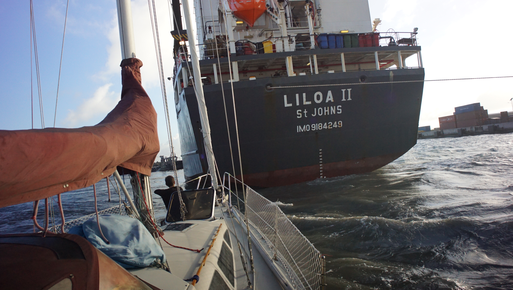
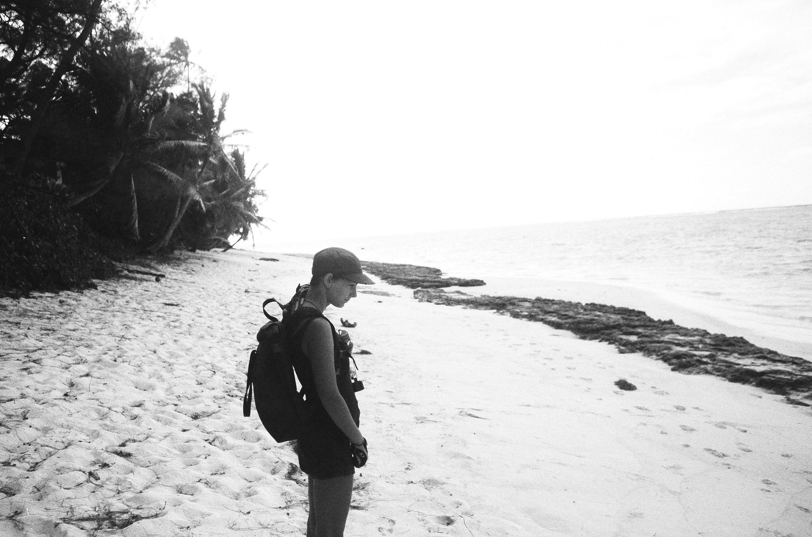

cook islands

In early July 2017, we sailed to Rarotonga in the Cook Islands. The island is only 32 km (20 mi) in circumference, and completely encircled by a reef. The only safe harbor is Avatiu, but it is open to the North.
There is no anchoring here, the only option is to med-moor to the harbour wall. There is a washroom and showers nearby. There is a propane refill station close to the main harbour, and it's possible to get a SIM card from Bluesky for internet.
Avatiu port is very small, and mostly occupied by cargo ships. One day, one came in and its stern came very close to our bow. Sometimes they ask sailboats to move to allow the ships to dock, but they did not ask us. We wish they had. By the time the ship was here, we had our stern right near the pier and could not back any further. Rekka sat at the bow, waving to the people aboard the ship. All was fine in the end, but it was stressful to have something that big right in front of you.
Almost every day, kids would come and dive at the pier where we were moored. They liked to hang from our stern lines, and to sit on them. One time, a boy accidentally undid one of our ropes—oops, glad we were onboard to see it happen.
We cycled around Rarotonga, the south side of the island has nice roads, but the east side isn't as nice, and most of the north part of the island is dotted with resorts. We enjoyed the ride anyway, stopping at a beach to enjoy the salt air and sun.
We left Rarotonga in mid July to sail to niue. We hoped to go travel to other islands in the Cooks, but many are atolls with shallow entrances—too shallow for pino's 1.9 m (6.3 ft) draft. We did not want to risk anchoring in the ocean, especially not in an area prone to violent squalls. A fellow sailor lost their boat to a reef in Manihiki, after anchoring outside for the night.
